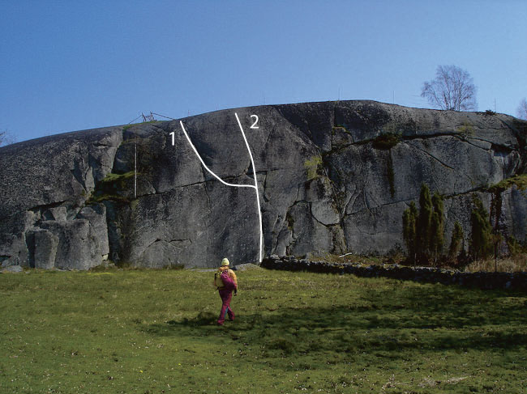

<div style="float: right; margin-left: 10px; padding: 3px; border: solid 1px #cccccc;"> <googlemap width=330 height=350 lat="56.1693539934652" lon="15.0493812561035" zoom="11" type="map"> 56.1693539934652,15.0493812561035,Valberget
</googlemap> </div>
[[Bild:Skärgårdsturen1.jpg|thumb|400px|Bobo Gustavsson klättrar
Skärgårdsturen
5+
Foto:
Fredrik Rapp
]]
Kategori:Blekinge
Lat: 56.1693539934652 Long: 15.0493812561035
Tjärö är ett vacker naturreservat strax söder om Åryd, nära Köpegårdaberget, i Blekinge. På ön återfinns två klippor som bjuder på klättring. Även om det inte finns så jättemycket klättring på Tjärö, så är atmosfären och upplevelsen väldigt speciell. Klippan är av god kvallitet och de sprickor som de flesta leder följer bjuder på fina säkringar. För att komma till Tjärö så tar man färja från antingen Järnavik eller Karlshamn. Dessa går endast under sommarhalvåret. Annars är det egen båt som gäller. Ett tredje alternativ är att ha egen kajak (eller att hyra det vid Nytäppet mittemot Matvik). Ute på ön finns ett STF-vandrarhem som det går att bo över på om man har bokat rum (Tjärö Turiststation tel 0454-60063/i n f o@tjaro.com). Det är inte tillåtet att campa fritt i reservatet.
Från Karlshamn
kör du österut mot Karlskrona och tar av från E22:an strax efter Åryd, mot Järnavik. I Järnavik är det turistfärjan till Tjärö som gäller. Det går också att ta färja från hamnen i Karlshamn. Båda färjorna går tyvärr bara under sommarhalvåret. Väl ute på ön är det lätt att orientera sig med hjälp av kartan nedan. Om du skulle vilja paddla egen kajak så finns en bra iläggningsplats med brygga, om man följer vägen förbi Köpegårdaklippan och till dess slut (se Köpegårda).
Färja från Karlshamn:
Färja från Järnavik:

Detta är klippan som syns direkt till höger om piren där Karlshamnsfärjan lägger till. Den högra delen där bl.a. "Skärgårdsturen" återfinns, stupar rakt ner i vattnet. För den som inte tycker att klättringen ger tillräckligt med spänning, går det utmärkt att hoppa från toppen av klippan ovanför "Skärgårdsturen". Vid den delen av klippan är det ca fem meter djupt vatten och fritt från stenar och annat obehagligt.

En mindre klippa på den södra delen av Tjärö. Tyvärr saknas logiska linjer. Men klippan ligger mycket vackert på en äng. Ganska knepigt att bygga toppankare.
[[Bild:Pampersaction.jpg|thumb|400px|left|Mäktig klättring på den brutala
Pampers Bigwall
4
Foto:
Fredrik Rapp
]]
[[Bild:Hoppet.JPG|thumb|300px|Stefan Teglund topprepar
Skärgårdsturen
5+, medan Erblin Neziri och Povel Andersson gör ett luftigt hopp.]]